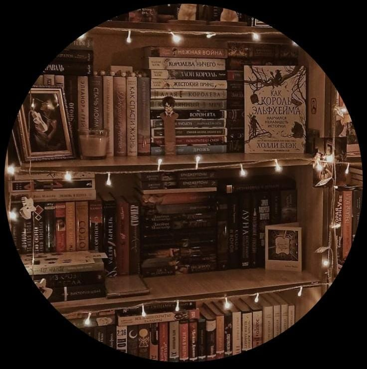
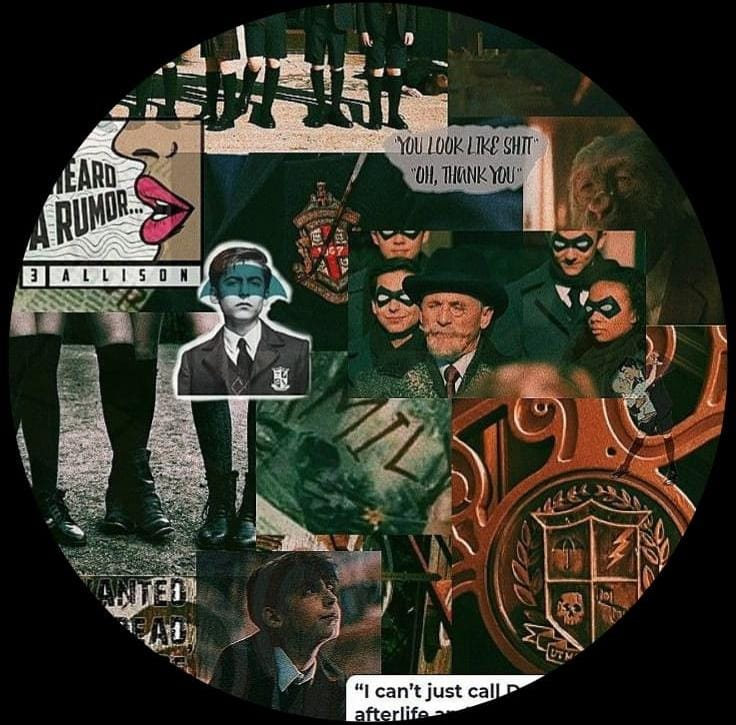
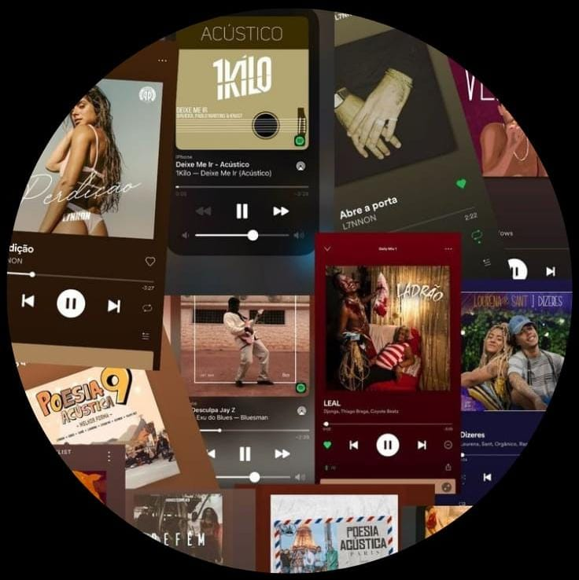

Explorando o fascinante mundo das séries, música e livros.
As minhas três paixões agrupam em um ecossistema rico e diversificado.
|  | LIVROS
os livros abrem portais para a imaginação, permitindo que eu me |
| SÉRIES
As séries, com suas tramas envolventes,me transportam |
 |
|  | MÚSICA
A música, com suas notas harmoniosas, é a trilha sonora |
Juntas, essas três paixões formam um quadro único que enriquecerá a minha jornada cultural e emocional.